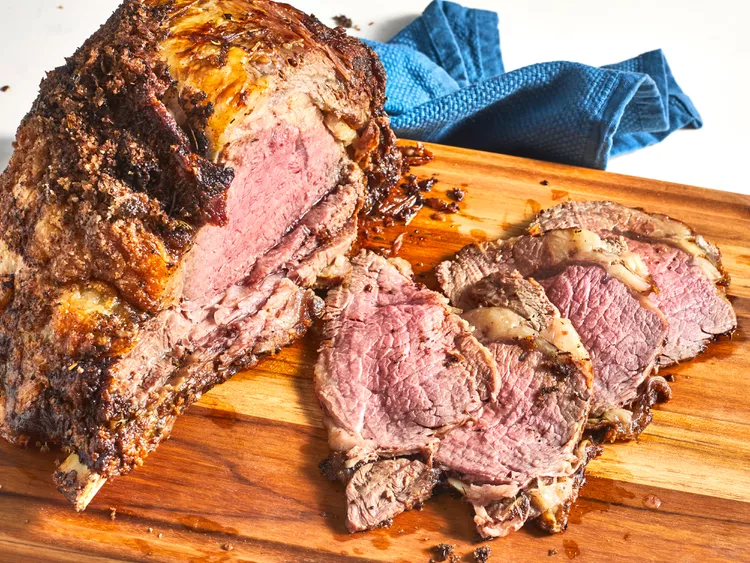

Prime Rib

Description
If you've ever carved into a prime rib at a big holiday meal expecting a juicy, perfectly pink interior only to discover a dry, overcooked roast, this recipe is for you.
Ingrediants
- 1 (4 pound) prime rib roast
- ¼ cup unsalted butter, softened
- 1 tablespoon freshly ground black pepper
- 1 teaspoon herbes de Provence
- kosher salt to taste